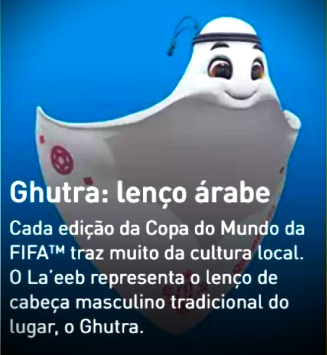
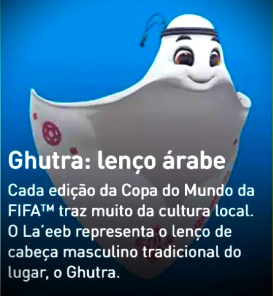
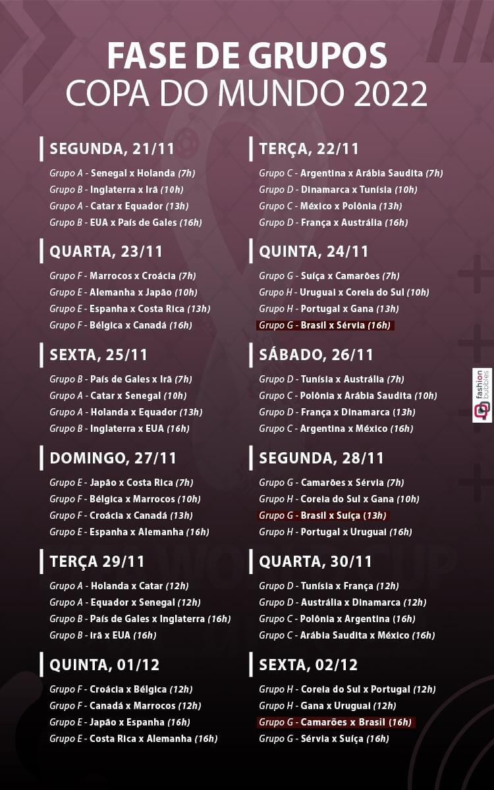
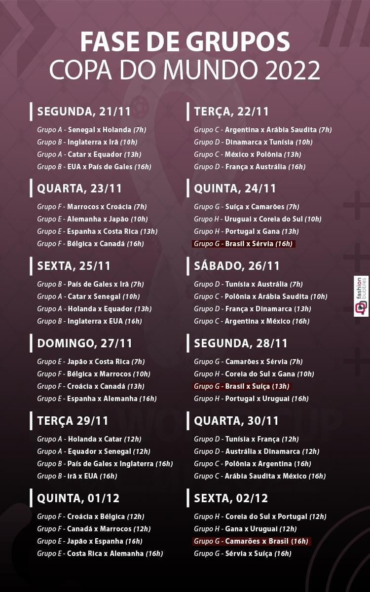

A competição será realizada no Catar (ou Qatar). Essa será a primeira vez do torneio no Oriente Médio.
Entre os dias 20 de novembro e 18 de dezembro de 2022, todos os cantos do mundo devem acompanhar este que é um dos eventos mais assistidos no planeta. Para se ter uma ideia da audiência, mais de 3,5 bilhões de pessoas acompanharam a Copa do Mundo de 2018 da Rússia.
Após as eliminatórias da Copa do Mundo, que aconteceram entre junho de 2019 e junho de 2022, foram classificadas 32 nações para participar da competição.
A Fifa apresentou o mascote oficial da Copa do Mundo de 2022. Trata-se de La'eeb, um simpático lenço de cabeça masculino tradicional da cultura árabe.
No Catar, país sede da Copa, o artefato recebe o nome de Ghutra. O de cor branca, como o escolhido pela Fifa, significa pureza.
Segundo a Fifa, a palavra La’eeb significa jogador habilidoso em árabe. A entidade promete disponibilizar aos torcedores GIFs, stickers, papéis de parede e filtros com o mascote em suas redes sociais e plataformas como Facebook, Instagram, Twitter, TikTok, WhatsApp e Snapchat.
Ele apareceu pela primeira vez durante a abertura do sorteio dos grupos do mundial. Numa animação de apresentação, passou com um dos apresentadores da festa pelos mascotes das edições anteriores.
A inspiração pode ter vindo do próprio Emir do Catar, o xeque Tamim bin Hamad al-Thani. Ele subiu ao palco para ser recebido pelo presidente da Fifa, Gianni Infantino, usando o artefato.
(Fonte: Imagem Claro / Texto Ig) 


| Bandeira | Proporção | País | Curiosidades | ||||
|---|---|---|---|---|---|---|---|
ÁSIA (AFC: 6 vagas) |
|||||||
 |
11:28 | CATAR | |||||
 |
1:2 | AUSTRÁLIA | |||||
 |
4:7 | IRÃ | |||||
 |
2:3 | ARÁBIA SAUDITA | |||||
 |
2:3 | JAPÃO | |||||
 |
2:3 | COREIA DO SUL | |||||
CONTINENTE: AMÉRICA DO SUL (CONMEBOL: 4 vagas) |
|||||||
 |
7:10 | BRASIL | |||||
 |
1:2 | EQUADOR | |||||
 |
2:3 | URUGUAI | |||||
 |
9:14 | ARGENTINA | |||||
CONTINENTE: AMÉRICA DO NORTE/CENTRAL E CARIBE (CONCACAF: 4 vagas) |
|||||||
 |
1:2 | CANADÁ | |||||
 |
10:19 | ESTADOS UNIDOS | |||||
 |
4:7 | MÉXICO | |||||
 |
3:5 | COSTA RICA | |||||
CONTINENTE: ÁFRICA (CAF: 5 vagas) |
|||||||
 |
2:3 | MARROCOS | |||||
 |
2:3 | TUNÍSIA | |||||
 |
2:3 | SENEGAL | |||||
 |
2:3 | GANA | |||||
 |
5:4 | CAMARÕES | |||||
CONTINENTE: EUROPEU (UEFA: 13 vagas) |
|||||||
 |
2:3 | SÉRVIA | |||||
 |
1:2 | CROÁCIA | |||||
 |
8:5 | POLÔNIA | |||||
 |
28:37 | DINAMARCA | |||||
 |
3:5 | ALEMANHA | |||||
 |
2:3 | HOLANDA | |||||
 |
3:5 | INGLATERRA | |||||
 |
3:5 | PAÍS DE GALES | |||||
 |
13:15 | BÉLGICA | |||||
 |
2:3 | FRANÇA | |||||
 |
1:1 | SUIÇA | |||||
 |
2:3 | ESPANHA | |||||
 |
2:3 | PORTUGAL | |||||
CONTINENTE: OCEANIA (OFC: 0 vagas) |
|||||||
sem países classificados |
|||||||
Fonte: AFONSO, Lucas. "Países participantes da Copa do Mundo de 2022"; Brasil Escola. Disponível em: https://brasilescola.uol.com.br/educacao-fisica/paises-participantes-da-copa-do-mundo-de-2022.htm. Acesso em 26 de outubro de 2022.

 
